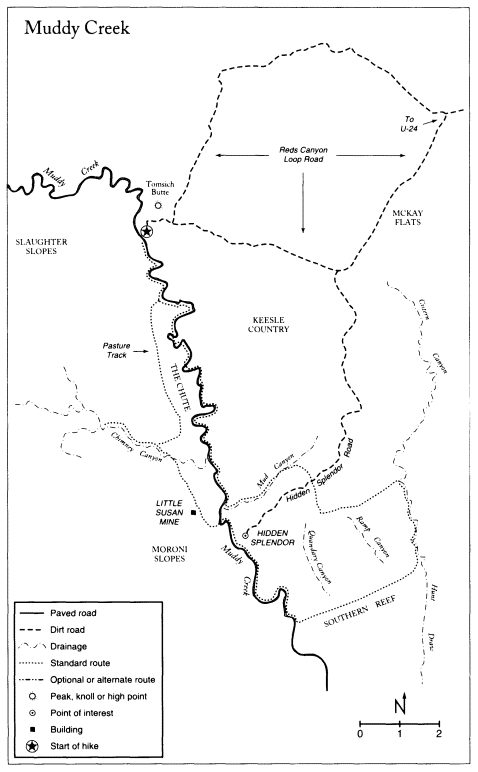
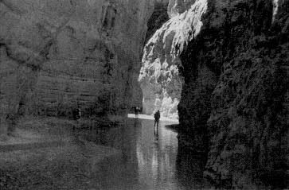
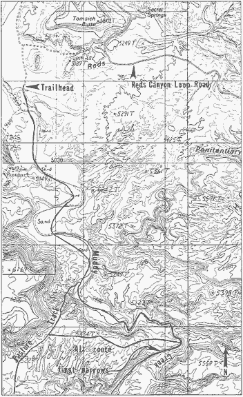
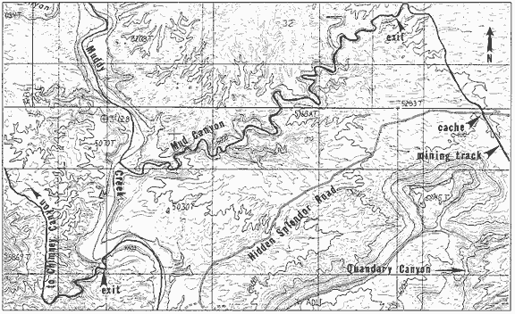
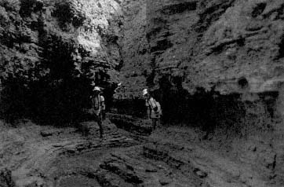
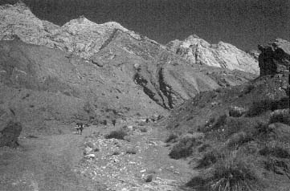
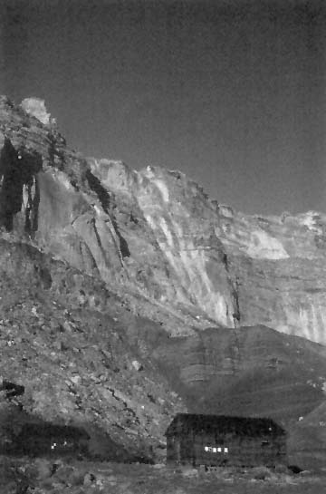
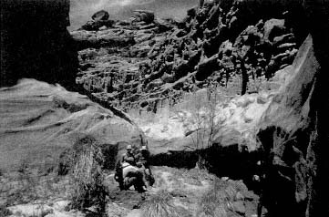
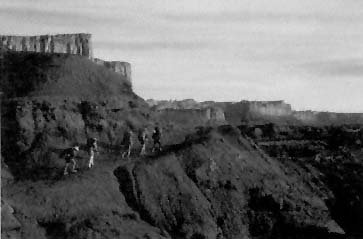

For all the toll the desert takes of a man itgives compensations, deep breaths, deep sleep, and the communion with stars.
Mary Austin, 1903
Muddy Creek flows for ninety miles, starting in the highlands of the Wasatch Plateau and ending near the small town of Hanksville, where it joins the Fremont River to become the Dirty Devil. During the course of its wanderings, Muddy Creek cuts through the San Rafael Swella magnificent area of multicolored badlands, sheer cliffs, and deeply incised canyons. As Muddy Creek skirts the backside of the western reef of the San Rafael Swell, it has cut hundreds of feet into the Coconino Sandstone, leaving behind The Chute, a narrow, sheer-walled canyon similar to the Black Box canyons of the San Rafael River to the north. Other canyons of equal interest are in the vicinity: Mud Canyon is a singular Moenkopi slot; Cistern Canyon in the Southern Reef is an enchanting Navajo-lined narrows; and Chimney Canyon has been called by some the most beautiful in the Swell.
The San Rafael Swell was home to Indians of the Desert Archaic Culture, descendants of the Paleo-Indians who crossed the Bering Sea land bridge some fifteen thousand years ago. The Desert Archaic Indians roamed the San Rafael Swell from 5000 B.C. to A.D. 500. The Fremont Indians arrived from the north around A.D. 500 and had left the area by A.D. 1300. Although extensive evidence of Indian habitation has been found in other areas of the San Rafael Swell, little has been discovered in the Muddy Creek drainage.
In the 1870s the Swaseys, a pioneer Mormon family, moved to the San Rafael Swell. They ran cattle along Muddy Creek and on Sinbad Country, the plateau to the east. The Swasey name is synonymous with the San Rafael Swell: they are responsible for naming many of its fea-
tures: Sids Leap, Cliff Dweller Flat, Eagle Canyon, Joe and his Dog, and Rods Valley, among many others. The rush for uranium started in the early 1900s, and ore from Temple Mountain was used by Madame Curie in her studies on the nature of radiation. Uranium from the San Rafael Swell was instrumental in the construction of the first atomic weapons. The uranium miners left behind a legacy of roads, mine workings, and old buildings whose remains can be seen today.
The hike starts at Tomsich Butte and descends The Chute of Muddy Creek. After leaving the main canyon system by way of Mud Canyon, the route crosses a corner of Keesle Country and goes to the Southern Reef. Cistern Canyon is followed south through the reef to its base, a painted desert area with the nearly vertical walls of the reef as a backdrop. Lower Muddy Creek and an old mining track high above the canyon floor take you to Chimney Canyon with its luxuriant riparian side canyons and wondrously sculpted Wingate walls. The Pasture Track, an abandoned mining road, leads back to the trailhead. This route is a compilation of shorter routes that were first presented in Canyoneering: The San Rafael Swell.
Six days minimum. Layover days and digressions can add a day or two.
4560' to 5760'.
March 15 to May 15 or before spring run-off, and September 1 to November 15. Water levels vary from year to year. Muddy Creek often dries up in July and August. Because there is so much wading on this trip, air temperatures should be reasonably warm before undertaking the hike. There is a flash flood potential in most of the canyons.
7.5-series USGS topographic maps: Hunt Draw, The Frying Pan, and Tomsich Butte. Metric map: San Rafael Desert.
This is a moderately strenuous route. The first day, hiking through The Chute, is the hardest and longest day. There is moderate route finding and there is one optional section of Class-4 climbing. Water may be scarce along some sections of the route. There may be one dry camp. There is a lot of wading on this route, but the water is rarely more than knee deep; however, there is the possibility of several short swims if water levels are high.
Wading shoes are essential. An old pair of hiking boots is recommended. Tennis shoes do not supply enough sup- port. At least one inner tube per group should be carried for floating packs if water levels are high. Large plastic bags are indispensable for keeping equipment dry. Each member of the party should have a walking stick to probe for deep water. Sticks are available all along the river. The lead person should not carry a camera! A forty-foot rope will prove useful. Each hiker should have a minimum water-carrying capacity of six quarts. Even when the air is hot, the narrows can be chilly. Be prepared.
The Chute of Muddy Creek and Chimney Canyon are both highly favored destinations for backpackers. Carry out your toilet paper when in these areas.
It is recommended that you leave a water cache near the Hidden Splendor road. This is easy to do and will save you from having to carry water from Muddy Creek. Two gallons of water cached per person is suggested. Two food caches can also be placed along the route. Directions on where to place the caches are detailed in the road section. Rodents are not a big problem when placing food caches in the San Rafael Swell, but it is advisable to bury your food in plastic bags or containers. Remember to carry out your containers or retrieve them later. Erase all signs of your caches.
San Rafael Resource Area. Bureau of Land Management. 900 N. 700 E. Price, Utah 84501. (801-637-4584)
The Chute, upper Chimney Canyon, and Mud Canyon are in the Muddy Creek WSA. Cistern Canyon is in the
Crack Canyon WSA. Lower Muddy Creek from Hidden Splendor to its mouth and the lower mile of Chimney Canyon are state land. At the present time they are not protected. The Utah Wilderness Coalition proposal for wilderness designation areas includes all of the lands covered in this chapter.
Access to Muddy Creek is via the Heart of Sinbad road. The road starts at the signed Goblin Valley exit on Highway 24, which is about twenty-five miles south of Interstate 70 and twenty-five miles north of Hanksville. This graded road is suitable for light-duty vehicles, but it may be impassable when wet. There is camping along spur roads. Driving time from either Hanksville or Interstate 70 to the trailhead is two hours. The road signs in the San Rafael Swell have a habit of disappearing from time to time, so keep track of mileage.
0.0
Mileage starts at Highway 24 and goes west. The road is paved.
5.1
Signed Goblin Valley junction. Continue straight (W) on the paved road.
6.0
Barrier Canyon-style pictograph panel under an overhang on the right (N). It can be seen from the road. These figures were drawn by Desert Archaic Indians sometime between 1000 B.C. and A.D. 500. You are now cutting through the Eastern Reef.
6.4
Road changes from asphalt to dirt.
7.1
A large parking area to the right (N) can be used for camping and as a base for exploring the Temple Mountain mining area.
7.2
"Tee." Stay on the main road to the right (W).
15.8
Signed junction. Stay to the left (WNW). The road to the right goes to Interstate 70.
18.5
Signed junction. Stay to the left (W). There is a sign to Reds Canyon and McKay Flat.
18.6
Cattle guard.
19.3
Signed junction. Go to the left (SW) toward McKay Flat.
27.5
Signed junction. Stay to the right (NW). The road to the left (S) goes to the Hidden Splendor mining area. See the Hidden Splendor road section below for directions on where to place water and food caches.
31.0
Cattle guard.
32.4
"Tee." Go left (W) toward Hondoo Arch. The main road goes to the right (NE).
32.6
Top of a small hill. Hondoo Arch is straight ahead. According to San Rafael historian Owen McClenahan, the name Hondoo is derived from the fancied and fanciful similarity between the arch and a knot on a cowboy's lariat, which is called a hondoo in Spanish. The monolith to the right is Tomsich Butte. Tomsich (also spelled Tomsick) was a uranium prospector. A story is told about Tomsich and his dog drinking poisonous creek water. Tomsich survived; the dog died.
32.8
Two broken-down cabins to the left.
32.9
The road divides. You can camp and park anywhere in this area. The hike starts at the end of the track to the left (S). There is no trail register. (The track is shown one-half mile southwest of Tomsich Butte on the Tomsich Butte map.)
Geology lesson: The brown cliffs and towers that look like chocolate torte cakes are in the Moenkopi Formation. Look west across the river. The grayish slopes with mining tracks
running across them are in the Chinle Formation. Above the Chinle are vertical walls of Wingate Sandstone. The sloping ledges of the Kayenta Formation above the Wingate are nearly nonexistent in this area. The rounded domes at the top of the cliff are Navajo Sandstone.
Hidden Splendor road section. Directions for caching food and water.
0.0
At the junction of the McKay Flats road and the Hidden Splendor road. This is at mile 27.5 above. There is a sign here. Go south.
5.2
Old gray car on the left. The area to the left (E) is Sinbad Country. According to Utah Place Names author John W. Van Cott, Sinbad Country was named for its ''arabesque monoliths of multiple shapes and colors representing scenes or castles described in the Arabian Knights." Wild horses and antelope are often seen in the area.
6.3
Top of a hill. Good views into the Muddy Creek drainage. The area to the right (W) is called Keesle Country.
7.7
There is a vague track to the left (ESE). It is north of a Wingate buttress and runs east behind the reef. (The track is not shown on the Hunt Draw map. It is located one-half mile north of elevation 6245T.) (See Map Two.) It may take some searching to find the track; which is impassable to most vehicles. You can cache food and water anywhere in the area. If you plan to explore Quandary, Ramp, or Upper Knotted Rope canyons, you will want to cache extra water here. (See Canyoneering: The San Rafael Swell for details.) You will reach this point on the middle of Day Two if no side trips are planned.
9.8
The Hidden Splendor mining area. From the silver water tank follow a road west across an old airstrip to the edge of Muddy Creek. The road continues down to Muddy Creek, but you shouldn't try to drive it. Place your cache in the cliffs. You will reach this area at the end of Day Three if no side trips are planned.

(Tomsich Butte map and Map One.) Go south down the canyon. Follow a mining track as you crisscross the creek. It is easiest to put on your wading shoes right at the start. The deeper into The Chute you progress, the more time you will spend in the water. Wilderness Study Area boundary markers appear in a half hour. Off-road vehicles are not allowed beyond this point. Minutes below the WSA boundary you will note the Pasture Track coming down a hillside to the right (LDC). The canyon starts to narrow and deepen. One hour from the WSA boundary signs, enter the first section of The Chute. (1.5-2.0 hours.)
Alternate route: The first section of The Chute may contain several deep pools that require deep wading or short swims. If it seems unreasonable to proceed down The Chute, exit the canyon to the right (LDC)(W), negotiate a steep hillside (many options), and intersect the Pasture Track. Follow it south into Chimney Canyon, which is the first major drainage encountered. (Hunt Draw map.) Hike down Chimney Canyon for an hour to Muddy Creek to re-

join the original route. There is a twin-tiered fall to descend near Muddy Creek (Class 4, 20' and Class 4, 8', belay and lower packs). (4.0-6.0 hours.)
The canyon opens for a short distance after the first narrow section.
Digression: After the first narrow section there is a Moenkopi-walled side canyon to the right (W) that is worth exploring. (0.5-hour round-trip.)
The canyon closes in again and the walls rise.
Rock-climber's note: After a couple of hours, keep a lookout for a narrow side canyon to the left (LDC). It takes a bit of scrambling and some short stretches of climbing (Class 5.5, 20') to get into. This is certainly one of the finest slots in the area. (0.5-1.0 hour round-trip.)
It takes four to six hours of constant wading to reach a log jam that is twenty-five feet above your head. (Hunt Draw map.) This is the narrowest portion of The Chute. It takes another hour to exit the narrows and reach the mouth of Chimney Canyon, which comes in on the right (NW). There is a ten-foot-high boulder on each side of Muddy Creek at its confluence with Chimney Canyon. Hike up Chimney Canyon for 200 yards and climb a short twin-tiered fall (Class 4, 8' and Class 4, 20', belay and haul packs). There is a large spring and good camping a couple of hundred yards above the falls. (5.0-7.5 hours.)
Historical note: The name Chimney Canyon has been attributed to both the brick-colored walls of the Moenkopi Formation in the canyon's lower reaches and to a prominent, chimney-like tower near its head.
Water: The preferred and prettier campsite is above the twin-tiered fall, but the springs there have a high mineral content and can cause stomach upset. An alternative is to camp at the mouth of Chimney Canyon and procure water from Muddy Creek. Cattle graze upstream, so treat the water with extra care. The use of this alternative negates the need to ascend the Class-4 wall at the twin-tiered fall.
(Hunt Draw map.) Continue down Muddy Creek for forty-five minutes to the mouth of Mud Canyon. (Map Two.) It is the first side canyon coming in on the left (SE) at creek level. (Mud Canyon is shown but is not labeled on the map. It is located just north of elevation 5030T.) There will be no more water until the end of the day. If you did not place a water cache along the Hidden Splendor road, you will have to carry enough water to last until the middle of Day Three. Load up here. (1.0 hour.)
Hike up Mud Canyon. After thirty minutes the canyon divides at a ten-foot-high, brown, square tower that is at wash level on the right. Go left (N). Thirty minutes past the ten-foot tower the canyon divides at a brown mud fin. Go left (W). Follow the gray canyon floor.
Digression: Go right, along the red canyon floor. This narrow canyon ends in an alcove. (0.25-hour round-trip.)
Fifteen minutes past the brown mud fin the canyon divides equally at a horizontally layered buttress. Go right (ENE). This section of canyon contains several challenging chockstones (Class 4) and ends at a fall. To exit the canyon, backtrack for 200 yards and scramble up a steep, loose slope to the left (LDC)(S). Below a dark-brown cliff band traverse left (E) at a comfortable level for five minutes. (Do not drop back into Mud Canyon.) Go around a corner and exit up the first easy break in the cliff band to the right. Hike to the top of the hill. (2.0-3.5 hours.)
From the top of the hill look south-southeast toward a Wingate-topped buttress (elevation 6245T). You will see a mining track cutting across the Chinle on the northwest side of the buttress. Make your way toward the left side of the mining track. You will drop in and out of sev-


eral shallow canyons. All are easy to negotiate and variations here won't matter. Intersect the Hidden Splendor road (near elevation 5283T). (1.0 hour.)
Follow the Hidden Splendor road (the direction you take will depend on where you meet the road) until you intersect a vague mining track going east-southeast below the north side of the Wingate-walled buttress (elevation 6245T). Most hikers will have left a food and water cache in the vicinity.
Follow the mining track. In ten minutes the track passes an old car.
Digression: There are three excellent canyoneering routes that start near here: Quandary, Upper Knotted Rope, and Ramp canyons. See Canyoneering: The San Rafael Swell for details.
Continue following the track southeast toward an opening in the escarpment to the right (S). The opening marks the head of Ramp Canyon. (Ramp Canyon is not labeled on the map. It is the first canyon going through the reef to the west of Cistern Canyon. It is immediately east of elevation 5650T.) There is good camping and medium potholes a short distance down Ramp Canyon.
Cistern Canyon is the first canyon to the east of Ramp Canyon. To get to it follow the track toward Ramp Canyon until you are close to its head, then go northeast up a steep slope. Stay parallel to a Wingate wall and below the Chinle. From the top of the slope follow a steep, shallow, red-walled gully east down to Cistern Canyon.
Hike south down Cistern Canyon to Bullberry Spring. There is good camping in an area of cottonwoods near this small spring. (1.5-2.5 hours.)
Water: This is normally a dry camp. Water has to be carried from your cache near the Hidden Splendor road or from Muddy Creek. If you do not have enough water and Bullberry Spring is dry, continue south down Cistern Canyon. There are medium potholes throughout the canyon. If everything is dry, proceed to the large spring at the mouth of Quandary Canyon. See Day Three for details.
(Hunt Draw map.) Go south down Cistern Canyon. As the red Wingate walls rise, note the superb weathering of the sandstone. By the time you pass under a huge chockstone you are in the Navajo. The canyon itself presents small challenges but no big problems. You will pass through the Carmel Formation as you exit the Southern Reef. (1.0-1.5 hours.)
Geology lesson: This is a good opportunity to take a minute to look at the Southern Reef. Note how the sandstone layers are tilted at an angle, at times almost reaching the vertical. These sandstone layers, or strata, were at one time horizontal. They were formed when the forces of wind and water carried sand from eastern highlands to their present location. The sand was deposited in freshwater lakes, along the shores of ancient seas, or in vast desert areas similar to the present-day Sahara. The unique characteristics of the various formations are due to the point of origin of the sand and silt and the diversity of the depositional environment.
Fifty to sixty million years ago pressures like an expanding

balloon, from deep beneath the earth's crust pushed the strata upward, forming a dome-shaped anticline eighty miles long and forty miles wide. The area in the middle of the anticline is called the San Rafael Swell. The strata on the periphery of the anticline were pushed up to form the near-vertical walls that you are now looking at. The term reef" is used to describe the escarpment because the early explorers who named it thought the walls looked like a coral reef.
Your goal is to follow a wash southwest under the face of the reef to Muddy Creek. (Do not make the mistake of hiking south out the mouth of Cistern Canyon and continuing south into Hunt Draw.) There is a maze of small washes, hills, and cliffs. Try to stay in the main wash, but detour as necessary. (The wash is shown as a stream on the map.) It takes an hour to reach the mouth of Quandary Canyon, which comes in on the right (NW) (shown one-eighth mile northwest of elevation 4802T). It is easy to recognize since it is the only canyon in the area with large cottonwoods.
Digression: There are large pools a short way up Quandary Canyon. One is at the top of a steep slab. Although the
mouth of the canyon is choked with vegetation, the pools are worth the trouble to reach them.
Continue southwest along the base of the reef for a half-hour to Muddy Creek. (1.5-2.5 hours.)
Follow Muddy Creek upcanyon. It cuts through the reef in an awesome display of Wingate and Navajo walls. There is a lot of wading, but even in high water the creek is usually no more than knee deep.
Digression: The first side canyon to the right (E) after entering the reef is partially blocked by a wall of tamarisks. Five minutes up the side canyon is a large pool. Since you will be camping on Muddy Creek, you may want to obtain fresh water here. (The side canyon is shown one-quarter mile south of elevation 4990T.)
Mine shafts and an old building appear on the right (LUC) as you approach the Hidden Splendor mining area. (Hidden Splendor is not labeled on the map. It is one-half mile west of elevation 4888T.) A couple of tracks run east up the cliffs to the mine site, but there isn't much to see. (2.0-3.0 hours.)
Historical note: Vernon Pick, a novice prospector from Minnesota, discovered uranium at Hidden Splendor in 1952. The story of his discovery is interesting. After a business setback in Minnesota, Pick and his wife decided to move to California. On the way, he heard about the uranium rush in Utah. Hoping to get in on the boom, Pick drove to Hanksville. He spent six months searching without success for uranium near the San Rafael Swell.
Nearly out of money, Vernon decided to give prospecting one last try before continuing on to the coast. He examined Crack and Chute canyons, then headed for Muddy Creek. He was only able to drive to within fifteen miles of the creek, so he hiked cross-country the rest of the way. Muddy Creek was swollen by recent rains and, after a struggle, Pick finally reached the Hidden Splendor area.
Using his scintillometera type of Geiger counterPick discovered a fertile lode of uranium-bearing ore. After marking his claim, which he named the Delta Mine, he
headed back to Hanksville to record it. Muddy Creek was still running high. Pick built a crude raft and floated part of the way down the creek before his raft disintegrated after hitting a rock. Now on foot and sick from drinking arseniclaced water, he barely made it back to his truck.
Vernon Pick built the road from McKay Flats down to the Delta Mine. After extracting a million dollars worth of ore, he sold the mine to Floyd Odlum for ten million dollars in 1954. Odlum changed the mine's name to Hidden Splendor; he then found that the mine was played out. Until the debacle was forgotten, the mine was called Odlum's Hidden Blunder.
Years later, Vernon Pick was asked about his lucky discovery. He said: ''The trouble with most people is that they don't like to walk. They want to go where they can drive a car or ride a horse. To get into the places where I wanted to gothe places nobody else had beenthere was no choice but walking. And I walked plenty."
Continue up Muddy Creek. Follow a mining track where possible and ford the creek as necessary. Twenty-five minutes from Hidden Splendor, where the canyon makes a U-turn and goes from south to north, the first side canyon enters on the left (S) (shown one-quarter mile north of elevation 5975T). (Map Two.) The floor of the side canyon is covered with rounded stream rocks. This side canyon and the main canyon to the north are both in the Muddy Creek WSA and are closed to off-road vehicles. There is camping on sandy benches on both sides of the creek. (0.5-1.0 hour.)
Water: Cattle graze throughout the area, so treat the water with extra care.
(Hunt Draw map.) Go up the side canyon to the south. There will be no more wading for a couple of days. An old mining track appears in the streambed. Follow it
out the right (LUC) side of the canyon, then north past the Little Susan Mine site. There are fine views of Keesle Country on the far side of the Muddy Creek Gorge to the east. Continue north on the track to Chimney Canyon. There are medium springs a short stroll downcanyon. (2.0-3.0 hours.)
Hike up Chimney Canyon along a wide wash surrounded by towering Wingate and Navajo walls. If you are cutting corners (which you can do), you will cross an abandoned airstrip that is not on the map. (The Frying Pan map.) Past the airstrip, at the junction of the South and North forks of Chimney Canyon, there is an old miner's cabin and a chicken coop (one-quarter mile southwest of elevation 5834). There is camping near the cabin as well as farther up the South Fork. See Day Five for details. (1.5-2.0 hours.)
Water: There is a large spring 100 yards behind the cabin in the South Fork.
(The Frying Pan map.) To get into the South Fork, which is the canyon behind the cabin, hike southwest up the narrow mouth of the canyon for a hundred yards and tackle a short pour-off (Class 4+, 10'). If this is too difficult or wet, follow the main canyon north for several hundred yards to an old mining track that goes through a break in the wall to the left (LUC). Ascend the mining track and hike into the South Fork.
Above the pour-off the canyon divides. Go right (W). There are many shady campsites in an area of large spring-fed pools. As you dayhike farther up the canyon, there are small obstacles and incredible rewards. Colors and textures run rampant here, and the Wingate walls have been

elegantly etched by wind and water. Above a fall, the canyon floor stretches white and sandy. Look for Halloween Hollow (AN), a small side canyon or slot to the right (LUC). Its walls of dripping sandstone have been compared to Antoni Gaudi's gothic cathedralSagrada Familiain Barcelona, Spain. The main canyon ends at a pool and hanging garden. (1.0-2.0 hours round-trip.)
The left fork of the South Fork has large springs and
contains a large triple arch on the left (E) that is about twenty minutes upcanyon. You will have to look downcanyon in order to spot it. (1.0 hour round-trip.)
Go north from the cabin. In ten minutes there is a short, wide canyon to the right that is not very interesting. In twenty minutes the main canyon divides at a red buttress that is covered with small holes. Go left (SSW). After ten minutes note the Ghoul's Wall (AN) to the right (LUC). (If you go too far, you will run into a balanced dirt clod in the middle of the streambed. Backtrack for a hundred yards.) There are wonderfully monstrous and imaginative shapes formed in the eroding sandstone. This is the best wall of its type that I have seen. After another ten minutes the canyon ends at a fall.
Rock-climber's note: The canyon ends only for non-climbers. For climbers there is a special treat ahead. Because the next section of canyon is difficult to enter from either end, it is pristine. Backtrack from the fall for several hundred yards until the wall to the right (LDC)(S) reaches its lowest height. Find the easiest place to ascend the wall (Class 5.3, 20', belay). Above the fall the canyon divides. Go right. The canyon ends in a fine set of narrows and a small grotto.
Return to the canyon division that is ten minutes down the canyon from the Ghoul's Wall. Go left (LDC)(N). This short canyon complex is the music of Chimney Canyon. Plan on at least an hour to explore these lavishly vegetated masterpieces. Because of the intense beauty of these side canyons, do not camp in them. Please leave them absolutely unscarred. (2.0-3.0 hours round-trip.)
(The Frying Pan map.) From the miner's cabin backtrack down Chimney Canyon. Several hundred yards

south of the southern or downcanyon end of the abandoned airstrip you need to locate an indistinct mining track coming in from the left (E). This is the Pasture Track. It is hard to see and may take some looking to find.
The track initially goes east and parallels the streambed. (Hunt Draw map.) It then turns north and traverses The Pasture. (The track turns north near elevation 5133T.) The Pasture Track stays high above Muddy Creek and runs along the top or west side of the pasture area well below the Wingate and Chinle.
Two hours from Chimney Canyon there is a wide side canyon coming in on the left (W) (shown to the south of elevation 5224T on the Tomsich Butte map). There are old mine workings at the head of the canyon that are not visible from the track. A small spring is located fifty yards downcanyon from the Pasture Track.
Fifteen minutes past the side canyon the track "Tees." The track you want to follow branches off to the right and enters a gully going southeast. This "Tee" is nearly impossible to see. Look for a cairn on a peninsula to the right (LUC). (If you don't see the "Tee,'' the track you are on will take you to the edge of a very steep slope. The correct track will be 100 feet below. Slide down the slopenot

fun with a pack onor backtrack and find the Pasture Track.) Follow the track down to Muddy Creek, then walk and wade upcanyon to the trailhead at Tomsich Butte. (5.0-7.0 hours.)